Unidad 3:
Introducción a la Programación Estructurada
Introducción a la Programación Estructurada
- Interpretación de enunciados.
- Ideas sobre programas y datos. Algoritmos.
- Estructuras Básicas de Programación. Secuencia. Selección. Iteración. Salto Incondicional. Eliminación del Salto Incondicional.
- Primer Paradigma de Programación; Programación Estructurada. Pseudocódigo. Implementación de algoritmos sencillos.
- Utilización del Modelo Top Down para desarrollo de problemas de programación paso a paso.
Unidad 5:
Introducción al Lenguaje C
Introducción al Lenguaje C
- Elementos del lenguaje C. Introducción a la sintaxis del lenguaje C. Primer ejemplo: Hola Mundo.
- Identificación de los elementos de sintaxis. Uso del compilador. Tipos de datos, tamaño, y declaraciones.
- Constantes. Declaraciones. Operadores aritméticos, relacionales y lógicos. Cast. Jerarquía de operadores.
- Operadores de evaluación (expresiones condicionales). Operadores de Asignación. Precedencia.
- Preprocesador. Archivos de cabecera. Encabezador stdio.h. Entrada y salida con formato.
- Funciones básicas de entrada salida: scanf (), printf (), getch(), getc(), getchar(), gets().
Introducción a la Programación Estructurada
¿Para qué programamos?
¡Para resolver problemas!
¿Pero como encaro la
resolución de un problema?
Resolución de problemas
- Para que tengamos un problema hace falta:
- Un objetivo que se quiere alcanzar
- Un punto de partida e incertidumbre en el camino a seguir para alcanzar el objetivo
- Un conjunto de desafíos que deberemos vencer para poder alcanzar nuestro objetivo
Solución: Procedimiento o serie de procedimientos que nos permitirán alcanzar nuestro objetivo.
Como resolver el problema (pasos)
- Identificar el problema y entenderlo
- Desarrollar alternativas de solución
- Seleccionar la "mejor" alternativa de solución
- Implementar la solución y comprobar su validez
- Establecer las correcciones necesarias
Como resolver problemas de computo
- Identificar el problema:
- Cuales son los datos, de que tipo son, cantidad de datos, etc...
- Resultado/datos esperados al terminar el programa.
- Alternativas de solución
- Algoritmos posibles a usar
- Herramientas/Librerías a usar
Como resolver problemas de computo
- Seleccionar la "mejor" alternativa de solución
- Siempre hay muchas formas de llegar a una solución, debemos encontrar la mas óptima de acuerdo a nuestras restricciones
- Implementar la solución y comprobar su validez
- Siempre debemos probar que las cosas funcionen como esperábamos Un buen diseño incluye dentro del mismo los casos de prueba.
- Establecer las correcciones necesarias
- Siempre hay errores que hay que depurar.
División de los problemas
- Dos aproximaciones posibles:
- Diseño descendente (Top-down): O mas comúnmente conocido como razonamiento deductivo, análisis o descomposición.
- Diseño ascendente (Bottom-up): Es la contraparte de top-down, también denominado síntesis. Usaremos partes existentes para construir una solución.
Diseño descendente (Top-down)
- Se descompone el sistema en partes para descubrir los sub-sistemas o módulos que lo componen. Inicialmente estos sub-sistemas serán cajas negras.
- Se trabaja primero en una visión global. Hasta que esta visión no es lograda no se analizan los sub-sistemas que la componen.
- Una vez terminado el nivel superior se analizan los sub-sistemas resultantes.
- Este proceso continua hasta que todos los sub-sistemas estén especificados (y dejen de ser "cajas negras").
- Hasta que el proceso de descubrimiento no está terminado no se puede comenzar a programar o hacer pruebas.
Diseño descendente (Top-down)
- Organizar la cocina
- Hacer los panqueques
- Finalmente servirlos
Ejemplo: Haciendo un paqueque
Diseño ascendente (Bottom-up)
- Se juntan partes conocidas hasta llegar a tener un sistema "emergente" que solucione el problema.
- También es conocido como aproximación "orgánica". O sea el sistema se va construyendo o creciendo (como un organismo) hasta poder resolver el problema.
- Una de las ventajas es que permite hacer pruebas mucho antes que Top-Down.
Diseño ascendente (Bottom-up)
Un ejemplo de análisis bottom-up es la construcción de algo con bloques (rasti, mis ladrillos o lego)
Las partes constitutivas fueron creadas primero, y luego se construye lo que buscamos con ellas.
Pero cuando las partes son creadas no tienen un propósito especifico. Ellas existen como bloques a usar.
¿Visiones contrapuestas?
- A pesar de ser dos formas opuestas de resolver/analizar problemas generalmente se utilizan en forma conjunta.
- La experiencia demuestra que lo mas conveniente (y rápido) es tratar de reutilizar código y usar librerías.
- El resultado es hacer un diseño descendente pero buscando sub-sistemas ya conocidos e implementados en librerías o problemas previos.
Ejemplo de 3 niveles
Nivel superior, funciones principales. Solución usando el lenguaje del problema y enfocado en su solución.
Sub-sistemas o módulos. Buscan especificar las cajas negras del nivel superior. No tienen necesariamente el lenguaje del problema. Se buscan comportamientos comunes y generales. Los módulos resultantes pueden ser reutilizados para resolver otros problemas.
Nivel inferior. Son los módulos que no se pueden subdividir mas. Se llegó a algo concreto que necesita ser implementado. Un ejemplo sería el control del hardware.
Características de la modularización
- Todo programa tiene un módulo principal
- Dicho módulo primario se divide en sub-sistemas que a su vez ejecutan una tarea única.
- Estos sub-sistemas deben codificarse de manera independiente de cualquier otra actividad.
- Al finalizar su función volverán al módulo principal.
- Esta independencia significa que ningún módulo será accesado directamente por otro, a excepción de sus propios sub-módulos y el módulo principal.
Uso de subprogramas (o funciones)
- Razones para crear un subprograma
- Reducir la complejidad del programa ("divide y vencerás")
- Eliminar código duplicado
- Limitar los efectos de los cambios (aislar aspectos concretos)
- Ocultar detalles de implementación (p.ej. algoritmos complejos)
- Promover la re-utilización de código
- Mejorar la legibilidad del código
- Facilitar la portabilidad del código
Bueno, podemos resolver problemas...
¿Y como programamos?
Historia de la programación
- Inicios
- Lenguaje de máquina : Unos y Ceros
- 1940
- Lenguaje Ensamblador : Mnemonicos
- 1950
- Lenguajes de Alto nivel : Basic, Cobol, Fortran, etc…
- Sentencias GOTO => Código Espagueti
- Cantidad de líneas 20.000
- Lenguajes de Alto nivel : Basic, Cobol, Fortran, etc…
- 1970
- Programación Estructurada : Pascal, C, etc…
- Bifurcación y control (while/for/switch/etc..)
- Cantidad máxima de líneas 50.000
- Programación Estructurada : Pascal, C, etc…
Historia de la programación
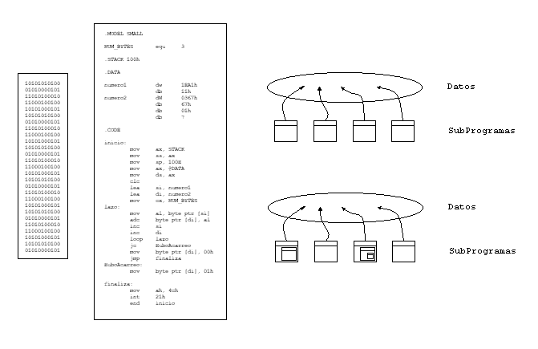Lenguajes de programación
- Lenguaje máquina:
- El único que entiende directamente la CPU del ordenador.
- Depende del modelo de ordenador (CPU).
- Muy difícil programar (binario, cadenas de ceros y unos).
- Lenguaje ensamblador:
- Equivalente al lenguaje máquina pero comprensible por los humanos, cada línea de código se traduce en una instrucción de máquina.
- Programas difíciles de entender y mantener, solo programas chicos o en los que la velocidad es un factor primordial.
Lenguajes de programación
- Lenguajes de alto nivel:
- Permiten que el programador exprese el procesamiento de datos de forma simbólica sin tener en cuenta los detalles específicos de la máquina Están orientados al problema y no a la maquina.
- Independientes del modelo de ordenador, son portables.
- Proporcionan un mayor nivel de abstracción, productividad, reusabilidad y mantenibilidad
Lenguaje de Alto Nivel
- Basado en una estructura gramatical que permite el anidamiento de instrucciones.
- Cuenta con un conjunto de palabras reservadas, para codificar estructuras de control y/o instrucciones.
- Permite el uso de símbolos aritméticos y/o relacionales.
- Permite la realización de programas independiente del Hardware (un ejemplo es la posibilidad de olvidarse del direccionamiento de memoria).
El Lenguaje C
{kind=link}
{kind=link}
{kind=link}
{kind=link}
De los articulos "The Top Programming Languages" del IEEE (links en los años)
Articulos nuevos 2020, 2022 & 2023 (Método de evaluación: 2022 & 2023).
Programas compilados e interpretados
- Existen dos tipos de forma de ejecución:
- Interpretado:
- Para ejecutar el programa hace falta un entorno o programa de ejecución.
- Este programa o interprete ejecuta el código directamente.
- Ejemplos: Python, JavaScript, PHP, Perl...
- Compilado:
- El programa pasa por un proceso de traducción del lenguaje en que se encuentra escrito (p.ej. C) a código de máquina.
- El resultado es un programa que se ejecuta solo (sin necesidad de un interprete)
- Ejemplos: C, C++, Pascal, Java...
- Interpretado:
Programas compilados e interpretados
- Existen dos tipos de forma de ejecución:
- Interpretado:
- Ventajas: Depuración mas sencilla e independencia del sistema operativo/hardware.
- Desventajas: La ejecución es bastante mas lenta.
- Compilado:
- Ventajas: Mas rápido ya que corre directamente en la máquina
- Desventajas: Mucho mas difícil de mantener y probar. Se debe hacer una versión del programa para cada sistema operativo y hardware donde se quiera correr.
- Interpretado:
Terminología (1)
- Software: Conjunto de instrucciones que le dicen al hardware que hacer.
- Lenguaje de programación: Lenguaje que permite escribir un software.
- Programa: Representación de algún software en un lenguaje de programación específico.
Terminología (2)
- Aplicación: Software que le permite al computador realizar una tarea específica.
- Entorno de desarrollo: Aplicación construida especialmente para el desarrollo de nuevo software.
- Sistema Operativo: Software encargado de administrar los recursos del sistema. Ofrece un conjunto de primitivas (funciones) a otro software, que le permite a este ultimo ser tan independiente de la arquitectura de hardware como sea posible
¿Se programa siempre igual?
¿Que diferencias hay entre los lenguajes?
Paradigmas de programación (I)
- Imperativo (o por procedimientos):
- Describe la programación en términos del estado del programa y sentencias que cambian dicho estado.
- Los programas imperativos son un conjunto de instrucciones que le indican al computador cómo realizar una tarea.
- Dentro de este existen:
Paradigmas de programación (II)
- Declarativos:
- Las sentencias que se utilizan describen el problema que se quiere solucionar, pero no las instrucciones necesarias para solucionarlo.
- Un ejemplo sería SQL
- Subtipos: Lógicos, Funcionales, otros...
El paradigma de programaciónque vamos a ver es...
- Programación estructurada:
- Se utilizan únicamente subrutinas y tres estructuras: secuencia, selección (if y switch) e iteración (bucles for y while).
- Mejora la claridad, calidad y tiempo de desarrollo de un programa.
- Normalmente se utiliza Pascal para enseñar este paradigma, pero también se puede usar C.
Otros
paradigmas de programación
usados
- Orientado a objetos: Usa los objetos en sus interacciones. Está basado en varias técnicas: Encapsulamiento, Herencia, Abstracción, Clasificación y Polimorfismo.
- Programación funcional: Es un paradigma de programación declarativa basado en el uso de funciones matemáticas. El objetivo es conseguir lenguajes expresivos y matemáticamente elegantes.
Paradigmas de programación
- Programación imperativa:
- Programación declarativa:
- Programación estructurada (info1 e info2):
- Programación orientada a objetos (intro en info2):
- Programación funcional:
Comencemos a programar...
Algoritmo
- Es un Método para resolver cierto tipo de problema mediante una secuencia de pasos precisos, definidos y finitos
- Un algoritmo es una serie de operaciones detalladas y consecutivas (algo así como una receta de cocina)
- Un algoritmo es un conjunto de reglas para resolver una cierta clase de problemas
- Se puede formular de muchas formas, pero siempre cuidando de que no exista ambigüedad
¿Cómo se describe un algoritmo?
- Lenguaje natural
- Pseudo código
- Diagramas (Estructogramas)
- Lenguaje de programación
La precisión es importante. Un algoritmono puede ser descrito de forma ambigua.
Ejemplo de Algoritmo
Descripción de un problema real en clase (llevar un botella desde el primer banco al último rincon mas extremo de la clase)
Ejemplo de Algoritmo
Problema: Sumar dos números
Primero lenguaje natural, luego pseudocódigo
- Solución en lenguaje natural
- Entrada: Dos números.
- Salida: Guardar el resultado de la suma en memoria e imprimir el mismo por pantalla.
- Proceso en peudocódigo
- Leer el 1er número
- Leer el 2do número
- Añadir los dos números
- Guardar el resultado en la memoria
- Imprimir el resultado por pantalla
Diagrama
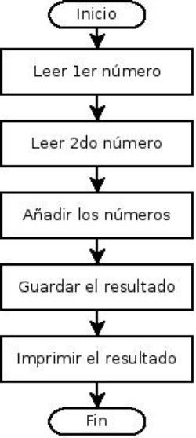Programa en C para sumar dos números
#include <stdio.h>
int main (void)
{
int num1, num2, suma;
/* Entradas */
printf("Introduzca el número 1?");
scanf("%d", &num1);
printf("Introduzca el número 2?");
scanf("%d", &num2);
/* Procesos */
suma = num1 + num2;
printf("El resultado de la suma es %d", suma); /*Salidas*/
return 0;
}
Programa en Java para sumar dos números
import java.io.*
public class Suma
{
private int num1, num2, suma;
public static void main(String args)
{
// Entradas
System.out.println ("Introduce el número1?");
num1 = System.in.readInt ();
System.out.println ("Introduce el número2?");
num2 = System.in.readInt ();
// Salidas
suma = num1 + num2;
System.out.printl ("El resultado de la suma es: " + suma);
}
}
Inicios de laprogramación estructurada(1966)
Teorema de Böhm y Jacopini (1966)
Cualquier programa de ordenador puede diseñarse e implementarse utilizando únicamente las tres construcciones estructuradas (secuencia, selección e iteración; esto es, sin sentencias goto)
- Böhm, C. & Jacopini, G.: "Flow diagrams, Turing machines, and languages only with two formation rules". Communications of the Association for Computing Machinery (ACM), 1966, Vol. 9, No. 5, pp. 366-371
- Dijkstra, E.W.: "Goto statement considered harmful". Communications of the ACM, 1968, Vol. 11, No. 3, pp. 147-148
Teorema de Böhm y Jacopini (1)
- "Secuencia": Conjunto de sentencias o acciones que se ejecutan sucesivamente y en orden (asignaciones, llamadas a rutinas, ...)
- "Selección": Estructura de control condicional, produce una bifurcación en la ejecución en base a una decisión. Esto es usualmente expresado con palabras clave como if..then..else..endif, switch, o case.
- "Iteración": Estructura de control repetitiva, realiza una serie de pasos en forma repetitiva. Esto es usualmente expresado con palabras clave como while, repeat, for o do..until.
Se recomienda que cada bucle sólo debe tener un solo punto de entraday un sólo punto de salida.
Muchos lenguajes refuerzan que solo haya un punto de entrada,pero pocos refuerzan que solo haya un punto de salida.
Mas en: http://es.wikipedia.org/wiki/Diagrama_Nassi-Shneidermang
Secuencia
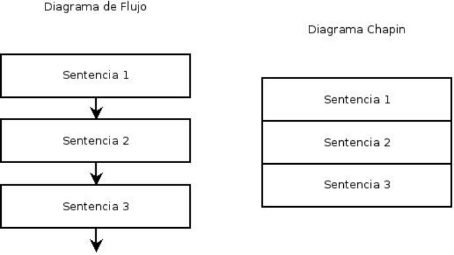Selección
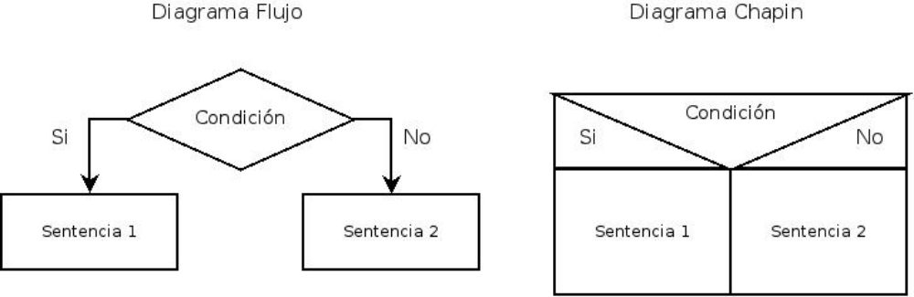Iteración
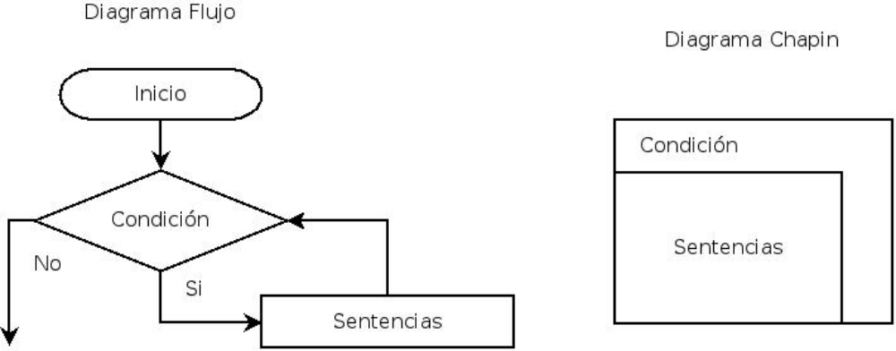Mas sobre estructuras de programación
La programación estructuradase consolida (1970)
Programación estructurada
- El teorema de Böhm y Jacopini evolucionaron en lo que llamamos programación estructurada.
- La idea central es:
- Las estructuras de control de un programa sólo deben tener un punto de entrada y un punto de salida.
- No deben haber bucles infinitos
- Esto es muy importante por que:
- Mejora la productividad de los programadores.
- Mejora la legibilidad del código resultante.
- Escribimos código, no sólo para que lo traduzca el compilador, sino para que lo puedan leer otras personas.
Ejemplo: Encontrar el máximode tres números enteros distintos
- Use secuencia y selección
- Realizar:
- Desarrollo paso a paso
- Elaborar en seudocódigo
- Elaborar Diagrama N-S (chapin) o flujograma
Máximo tres enteros, seudocódigo
DECLARACIONES:
a, b, c: enteros
INICIO
//Entradas
IMPRIMIR "Ingrese a"
LEER (a)
IMPRIMIR "Ingrese b"
LEER (b)
IMPRIMIR "Ingrese c"
LEER (c)
si (a > b) entonces
si (a > c) IMPRIMIR "El mayor es a =", a
si_no IMPRIMIR "El mayor es c =", c
si_no
si (b > c) IMPRIMIR "El mayor es b =", b
si_no IMPRIMIR "El mayor es c =", c
FIN
Máximo tres enteros, Diagrama NS/Chapin
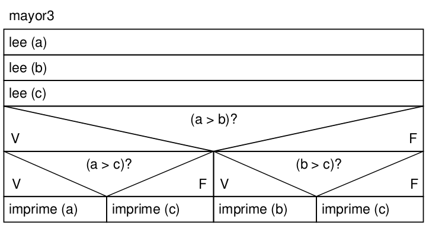Ya tenemos una forma decontrolar el flujo del programa...
¿Que mas nos falta?
Elementos de la programación
- ¿Que son a, b y c?
- ¡Variables!
- ¿Como traducimos el pseudocódigo a lenguaje C?
- Sintaxis
- Control de flujo y condiciones
- Tipos de dato
- Palabras claves
- Librerías básicas
- ¿Como hacemos un programa que compile? ¿Como debe formarse el módulo principal?
int main(void) {
/* cuerpo del programa */
return 0;
}Ahora si, programemos en C
¡Hola mundo!
#include <stdio.h>
int main (void)
{
printf("Hola Mundo!");
return 0;
}
Compilemos y corramos el programa
$ gcc -o hola_mundo hola_mundo.c
$ ./hola_mundo
Realizar los siguientes programas
- Dado un número entero verificar si ese número es par o impar
- Dado el número 3 realizar la sucesión número 3, 33, 333, hasta 10 sucesiones.
- Dado un número entero positivo, debe calcular su factorial. Tener en cuenta que 0! = 1, 1! = 1, n! = (n-1)! * n
- Leer un programa que lea dos números flotantes desde teclado y calcule e imprima su suma, resta, producto y división. Verificar que el divisor no sea cero.
- Dados tres lados que corresponden a un triangulo, determinar que tipo de triangulo se trata (equilatero, isósceles o escaleno). Asumir que los 3 lados forman un triángulo.
- Del ejercicio anterior, agregar la posibilidad de que los 3 lados pueden no formar un triángulo.
Generar:
Pseudocódigo y diagrama.
Los que puedan también código en C y compilar (no obligatorio para hoy).
Constantes y Variables
- Variables:
- Una variable es una posición de memoria con un nombre y se usa para guardar/mantener un valor que puede ser modificado por el programa.
- En C todas las variables deben ser declaradas explícitamente (esto no es así en otros lenguajes).
- Constantes:
- Valores que no cambian a lo largo de todo el programa (por ejemplo pi: 3.1416)
Algunas clases de Variables
- Almacenamiento temporal
- Las variables son contenedores de datos o valores en memoria que cambian durante la ejecución
- Contador
- Es una variable entera para llevar la cuenta de eventos del proceso
- Se usa generalmente para control de lazo
- El incremento en general es unitario
- Acumulador
- Es una variable que se utiliza como totalizador de cantidades
- Indicador o flag (bandera)
- Es una variable binaria que toma uno de dos valores posibles: verdadero o falso, si/no, igual cero (0) o distinto de cero
- Permite saber si el programa paso por determinado camino y tomar una decisión en consecuencia
Tipos de variables en C
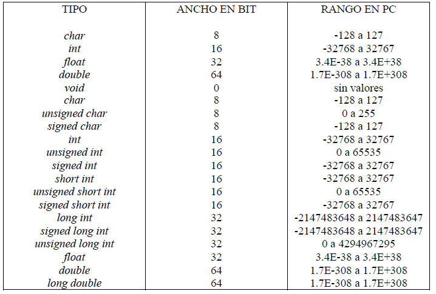Tamaño de las variables en Linux (I)
Para saber la configuración del sistema: getconf
$ man getconf
$ getconf -a | grep INT_
INT_MAX 2147483647
INT_MIN -2147483648
UINT_MAX 4294967295
$ getconf -a | grep CHAR_
CHAR_BIT 8
CHAR_MAX 127
CHAR_MIN -128
UCHAR_MAX 255
$ getconf -a | grep VERSION
_POSIX_VERSION 200809
GNU_LIBC_VERSION glibc 2.27
GNU_LIBPTHREAD_VERSION NPTL 2.27
Tamaño de las variables en Linux (II)
Usando C...
#include <stdio.h>
int main() {
printf( " short int: %zd\n" , sizeof(short int) ) ;
printf( " int: %zd\n" , sizeof(int) ) ;
printf( " long int: %zd\n", sizeof(long int) ) ;
printf( "long long int: %zd\n", sizeof(long long int) ) ;
printf( " char: %zd\n" , sizeof(char) ) ;
printf( " float: %zd\n" , sizeof(float) ) ;
printf( " double: %zd\n" , sizeof(double) ) ;
printf( " size_t: %zd\n", sizeof(size_t) ) ;
printf( " void*: %zd\n\n", sizeof(void *) ) ;
return 0;
}
Control: Selección (if)
if (condicion) {
sentencia1;
sentencia2;
sentencia3;
}
-
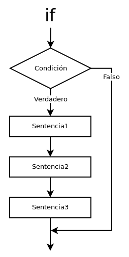
Control: Selección (if/else)
if (condicion) {
sentencia1;
sentencia2;
sentencia3;
} else {
sentencia4;
sentencia5;
sentencia6;
}
-
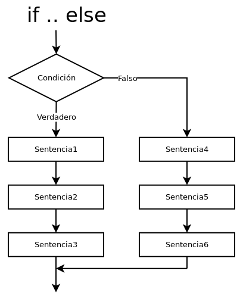
Control: Selección (switch)
switch (variable) {
case 1:
sentencia1;
sentencia2;
break;
case 2:
sentencia3;
sentencia4;
break;
...
case 'a':
sentencia7;
sentencia8;
break;
default:
sentencia9;
}
Control: Iteración (while)
while (condicion) {
sentencia1;
sentencia2;
sentencia3;
}
-
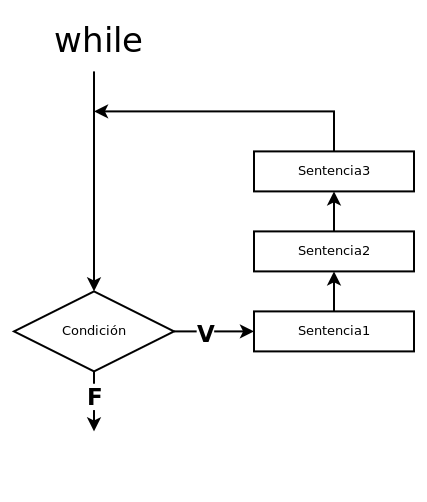
Control: Iteración (do/while)
do {
sentencia1;
sentencia2;
sentencia3;
} while (condicion);
-
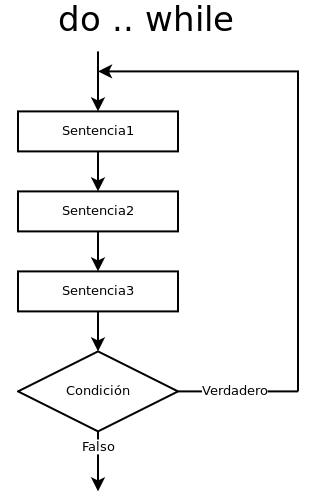
Control: Iteración (for)
for (ini;cond;paso) {
sentencia1;
sentencia2;
sentencia3;
}
-
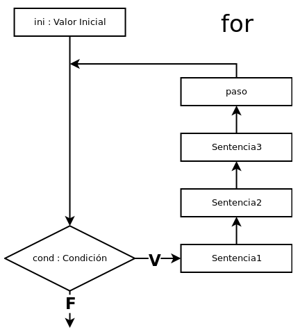
Comparación de la iteración for y while
for (ini;cond;paso) {
sentencia1;
sentencia2;
sentencia3;
}
// Igual que hacer...
ini;
while (cond) {
sentencias;
paso;
}
- Donde para el for:
- ini: Sentencia que se ejecuta antes de iniciar el for
- cond: Condición para permanecer en el for, si es falsa salimos del for
- paso: Sentencia que se ejecuta luego de terminar el cicloy antes de evaluar "cond"
Diferencia entre
While y Do/While

¿While, Do/While o For?
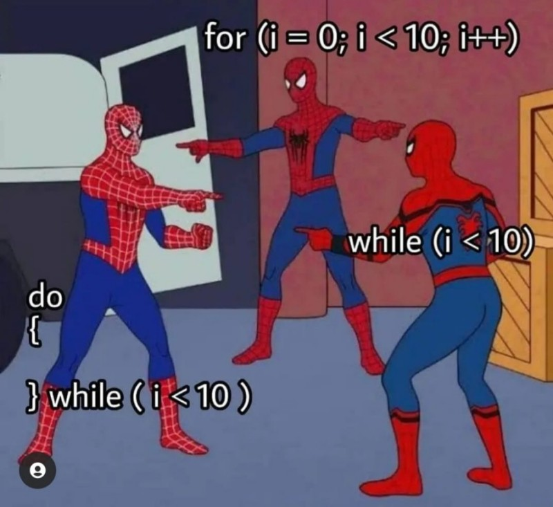
Condiciones
- Las condiciones son sentencias lógicas que siempre daran como resultado verdadero o falso
- C usa varios operadores de comparación y operadores lógicos (ver tabla precedencia operadores siguiente slide)
- Valores lógicos en C:
- Falso: Si el valor es 0x00 es considerado falso
- Verdadero: Cualquier valor distinto de cero será verdadero. C no especifica un valor particular.
- Ejemplos:
-
a > b, a == 10, a >= c, a != 20
-
Tabla de precedencia de operadores
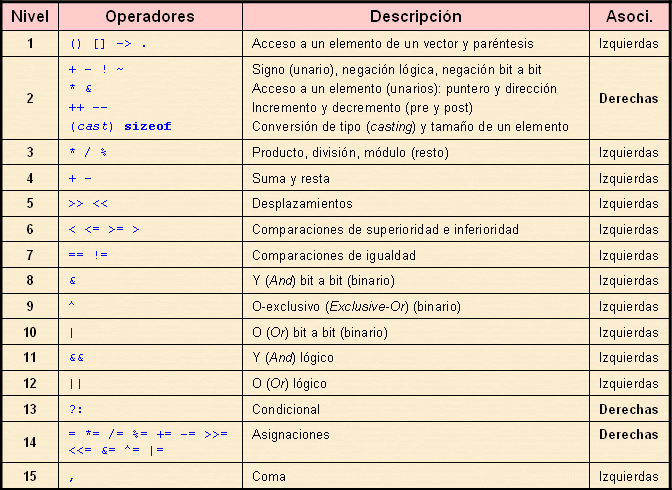{kind=link}
Funciones básicas
- Imprimir en pantalla:
-
int printf ( const char *format [, argument, ...]);
-
-
Leer del teclado:
-
int scanf ( const char *format [, address, ...]);
-
-
Format:
- %d | Número Entero
- %s | Cadena de Caracteres (string)
- %c | Cáracter
- %f | Flotante
Sentencias en C
- Las sentencias en C son terminadas por un punto y coma (;)
- Un salto de párrafo (CRLF) no da información al compilador, solo agrega "forma" al código (recordar lo visto como código obfuscado)
- Existen diversos estándares de codificación, en todos se usa el salto de párrafo
- Se puede armar un bloque de sentencias usando encerrando grupos de sentencias entre llaves ( { } )
Bueno, ahora tenemos todas las partes...
¡Escribamos el programa en C!
Ejemplo:
Encontrar el máximo de tres números enteros
#include <stdio.h>
int main (void)
{
int a, b, c;
/* Entradas */
printf("Ingrese a");
scanf("%d", &a);
printf("Ingrese b");
scanf("%d", &b);
printf("Ingrese c");
scanf("%d", &c);
// sigue...
Ejemplo:
Encontrar el máximo de tres números enteros
// continuando...
/* Procesos */
if(a>b) {
if(a>c) {
printf("El mayor es a = %d", a);
} else {
printf("El mayor es c = %d", c);
}
} else {
if(b>c) {
printf("El mayor es b = %d", b);
} else {
printf("El mayor es c = %d", c);
}
}
return 0;
}
Ademas de los operadores y la sintaxis...
¿Que otras cosas trae C?
Palabras reservadas (C89)
| auto | double | int | struct |
|---|---|---|---|
| break | else | long | switch |
| case | enum | register | typedef |
| char | extern | return | union |
| const | float | short | unsigned |
| continue | for | signed | void |
| default | goto | sizeof | volatile |
| do | if | static | while |
Palabras reservadas (C99)
| auto | double | int | struct |
|---|---|---|---|
| break | else | long | switch |
| case | enum | register | typedef |
| char | extern | return | union |
| const | float | short | unsigned |
| continue | for | signed | void |
| default | goto | sizeof | volatile |
| do | if | static | while |
| _Bool | _Imaginary | restrict | |
| _Complex | inline |
Estándares de C
Los vínculos son a Wikipedia por que los estándares son pagos. Por ejemplo el de C18 se puede encontrar en ISO/IEC 9899:2018
Biblioteca estándar de C
- stdio.h : Libreria de entrada/salida (pantalla, teclado, archivos y flujos en general)
- stdlib.h : Conversión de tipos, generación de números pseudo-aleatorios, gestión de memoria dinámica, y mas...
- string.h : Manejo de cadenas de texto
- math.h : Funciones matemáticas (seno, coseno, log, etc..)
- complex.h : Manipulación de números complejos (C99)
- ctype.h : Clasificación de caracteres
- time.h : Define un tipo de dato tiempo y funciones relacionadas con tiempos
- stdbool.h : Define el tipo de dato booleano (C99)
- Y otras...